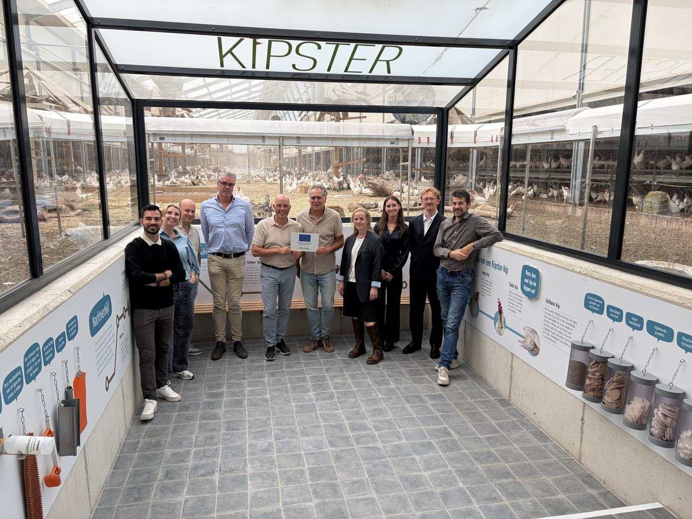

3 september 20263 September 2026Kick-off bij Kipster in VenrayKick-off at Kipster in Venray

Op donderdag 3 september 2026 kwamen alle betrokken partijen voor het eerst bij elkaar op de Kipster-boerderij in Venray. Tijdens de kick-off is het project formeel van start gegaan en zijn de eerste werkafspraken tussen de werkpakketten gemaakt.
Ook Stimulus Programmamanagement, dat OPZuid uitvoert, was aanwezig, samen met Craeghs Consultancy, dat de projectadministratie begeleidt.
On Thursday 3 September 2026 everyone involved met for the first time at the Kipster farm in Venray. The kick-off formally started the project and set out the first working arrangements between the work packages.
Stimulus Programmamanagement, which implements OPZuid, was present as well, together with Craeghs Consultancy, which supports the project administration.